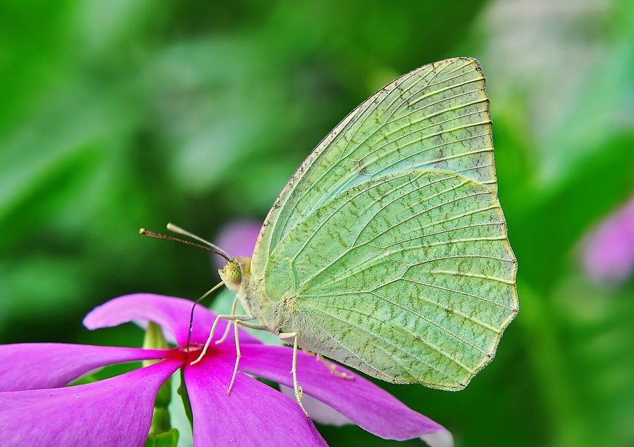

मॉटल्ड एमिग्रेंटMottled Emigrant
Catopsilia pyranthe · Pieridae · INS-0100

- Scientific name वैज्ञानिक नाम
- Catopsilia pyranthe (Linnaeus, 1758)
- Family कुल
- Pieridae
- Hindi हिंदी
- मॉटल्ड एमिग्रेंट
- Local names स्थानीय नाम
- mottled emigrant, motled emigrant, emigrant butterfly, mottled titli
- Status here यहाँ की स्थिति
- native
- Movement आवागमन
- Resident; numbers rise with migrants
- IUCN IUCN
- not evaluated
- Review समीक्षा
- audited and independently read
When to look कब देखें
Expected mainly in January, February, March, April, May, September, October, November, December. मुख्यतः जनवरी, फ़रवरी, मार्च, अप्रैल, मई, सितंबर, अक्टूबर, नवंबर, दिसंबर में अपेक्षित।
Populations increase during post-monsoon months (September–November) when migrant individuals arrive from northern populations. Source: Kehimkar (2008). In UP, local residents are supplemented by migrants during the cool season. Observed months in the region: September–May. All migrants and visitors →
Uses and possibilities उपयोग और संभावनाएँ
Drawn from the documented uses in the profile below, where each is labelled traditional, current or a research lead. All uses →
Tell it apart from इनसे अलग पहचानें
मॉटल्ड एमिग्रेंट / Mottled Emigrant
Catopsilia pyranthe (Linnaeus, 1758) — Pieridae
मॉटल्ड एमिग्रेंट — पूर्वी उत्तर प्रदेश के खुले मैदानों, खेतों और बंजर जगहों पर पाई जाने वाली एक छोटी पीली-सफ़ेद तितली है। इसके पंख नीचे की ओर दागों से मॉटल्ड (धब्बेदार) दिखते हैं। नर पीले रंग के होते हैं जबकि मादाएँ सफ़ेद या हल्के पीले होती हैं। यह तितली सर्दियों में बहुत संख्या में उत्तर से आती है और पूरे मौसम भर मैदानों में उड़ती दिखाई देती है। यह तितली मुख्य रूप से कसुरे (cassia) की पत्तियों पर अंडे देती है।
Quick Identification त्वरित पहचान
| Feature | Description |
|---|---|
| Size | Small to medium butterfly (body length 18–22 mm; wingspan 50–62 mm) |
| Male Colour | Bright pale yellow or golden-yellow dorsally |
| Female Colour | White or very pale yellow dorsally |
| Underside | Both sexes have distinctive mottled pattern with dark spots and streaks; yellowish-white base colour |
| Flight | Swift, direct flight; males hill-top congregate |
Field tip: Look for small pale yellow (male) or white (female) butterflies with characteristic mottled undersides flying rapidly over grassland and cultivated fields. The underside mottling with dark streaks and spots is very distinctive and readily separates this species from other pale emigrant butterflies.
Morphology आकारिकी
Biometrics (typical measurements in northern Indian plains):
| Measurement | Range |
|---|---|
| Body length | 18–22 mm |
| Wingspan | 50–62 mm |
| Forewing length | 24–28 mm |
Body: Small, slender body with clubbed antennae.
Wings (dorsal):
- Male: Bright pale yellow or bright golden-yellow upper surface, brighter than females.
- Female: White or very pale yellow upper surface, sometimes nearly white.
Wings (ventral): Both sexes have a distinctive mottled appearance on the underside, with a pale yellowish-white base colour marked with dark brown or blackish spots, streaks, and patches, particularly on the forewing and along the margins.
Sexual Dimorphism: Males are distinctly brighter and more yellow; females are duller and whiter.
Behaviour & Ecology व्यवहार और पारिस्थितिकता
The Mottled Emigrant is a powerful, swift flier despite its small size. It is a partial migrant in the region, with local populations supplemented by migrants from the north during the cool season. Males are attracted to damp ground and engage in puddling behaviour. The species is highly successful in utilizing a wide range of cassia and related plants, making it abundant in agricultural landscapes and degraded habitats. It is a generalist butterfly capable of exploiting disturbed and cultivated landscapes.
Life Cycle / Phenology जीवन चक्र
| Stage / Season | Event |
|---|---|
| Egg | Laid singly on Cassia and other host plants; yellow; hatch 3–5 days |
| Larval (Caterpillar) | 4–5 instars; mature larva 18–20 mm; yellow-green with black stripes; development 12–16 days |
| Pupa | Suspended chrysalis; greenish or yellowish; 10–14 days to emergence |
| Adult | Year-round with peak abundance September to May; local residents and migrants; lifespan 3–4 weeks |
Host Plants or Prey आहार
Larval host plants:
- Cassia fistula (Indian Laburnum / पीला कनेर)
- Cassia occidentalis (Prickly Senna)
- Manihot esculenta (Cassava / कसावा)
Adult nectar sources:
- Lantana camara, wild flowers, weeds, and flowering herbs throughout the region.
Predators / Natural Enemies शत्रु
- Birds: Insectivorous birds, particularly small warblers and flycatchers.
- Wasps: Small parasitoid wasps attack caterpillars and pupae.
- Spiders: Web-building spiders.
Agricultural / Human Relevance कृषि प्रासंगिकता
Pollinator. The Mottled Emigrant is a frequent visitor to flowering crops and wild flowers, serving as a pollinator for various plant species.
Indicator species. Its abundance indicates habitat quality and seasonal influxes of migrants, making it useful for monitoring butterfly populations and phenology.
Expected Locally स्थानीय रूप से अपेक्षित
Not a field record. Written from published accounts for eastern Uttar Pradesh. No confirmed local sighting yet — if you have seen it, that is what the atlas needs.
अभी तक स्थानीय पुष्टि नहीं। यह विवरण प्रकाशित स्रोतों से है, किसी अवलोकन से नहीं।
To be expected throughout Basti district in open grasslands, cultivated fields, and agricultural margins, particularly during the cool season (September to May). Males congregate on hilltops and damp ground. Females are less conspicuous and are encountered less frequently. Peak abundance occurs from November to February when migrant populations from the north arrive. Look for pale yellow (male) or white (female) butterflies with characteristic mottled undersides. The first local record would be a photograph with place and date; send it to the atlas contact on the About page.
Distribution वितरण
Global range: Widespread across Africa, the Middle East, and Asia, including South Asia and Southeast Asia.
In India: Distributed throughout the peninsula, the Gangetic plain, and other regions.
In Uttar Pradesh: Abundant partial migrant in all regions with suitable host plants.
In Basti district / eastern UP: Expected in all open habitats and cultivated areas, particularly from September to May.
Research Questions शोध प्रश्न
Anyone can investigate these | कोई भी इन प्रश्नों की जाँच कर सकता है
- What percentage of Mottled Emigrants captured in September are local residents versus new migrants? — Use mark-recapture methods to distinguish populations.
- Do males show hilltopping behaviour in Basti, and if so, which hills are preferred? / क्या नर तितलियाँ पहाड़ियों पर इकट्ठा होती हैं? — Survey hilltops for congregating males.
- Which Cassia species in local fields support the most caterpillars? — Survey and count caterpillars on different host plants.
- How does migration timing correlate with temperature and photoperiod? — Track arrival dates and correlate with weather data.
- What is the survival rate of caterpillars on wild Cassia versus cultivated varieties? — Measure development time and mortality rates.
Similar Species मिलती-जुलती प्रजातियाँ
| Species | How to tell apart | हिंदी | |
|---|---|---|---|
| [[common_emigrant\ | Common Emigrant]] (Catopsilia pomona) | Brighter yellow (male) or whiter (female); underside lacks mottling and has more uniform coloration | सामान्य एमिग्रेंट — कम दागदार |
| Common Clouded Yellow (Colias fieldii) | Larger; more orange-yellow coloration; different wing shape | पीली तितली — बड़ी, नारंगी |
Field rule: Small pale yellow (male) or white (female) butterfly with a distinctive mottled, dark-spotted and streaked underside, flying rapidly over grassland, is the Mottled Emigrant.
Taxonomy & Classification वर्गीकरण
Original description. Linnaeus described the Mottled Emigrant as Papilio pyranthe in 1758 in Systema Naturae, 10th edition (p. 469). The type locality is India. The genus Catopsilia was established by Hübner in 1819 for these emigrant butterflies. The species name pyranthe is derived from Greek mythology.
Subspecies. Multiple subspecies are recognized; C. p. pyranthe is the nominate and the subspecies present in India and UP.
Family and order placement. Order Lepidoptera, family Pieridae (whites and yellows), subfamily Coliadinae.
Phylogenetic notes. Catopsilia is a genus of long-distance migratory butterflies, with C. pyranthe and C. pomona being among the most successful migratory species in Asia.
IUCN status rationale. Not evaluated. Common and widespread, under no conservation threat.
Photo Gallery फोटो गैलरी
No photos yet — add field photos to media/species/mottled_emigrant/ and run node scripts/sync_photos.js.
Photos needed आवश्यक फोटो
- [ ] Adult male (नर)
- [ ] Adult female (मादा)
- [ ] Underside showing mottling (निचली सतह)
References संदर्भ
- Linnaeus, C. (1758). Systema Naturae per regna tria naturae, 10th ed. Laurentii Salvii, Holmiae.
- Bingham, C.T. (1905). The Fauna of British India, including Ceylon and Burma. Butterflies. Vol. 1. Taylor & Francis, London.
- Kehimkar, I. (2008). The Book of Indian Butterflies. Bombay Natural History Society, Mumbai.
- Kunte, K. (2000). Butterflies of Peninsular India. Universities Press, Hyderabad.
- Williams, M.C. & Boppré, M. (2015). Biogeography and biology of long-distance migrant butterflies in Africa and the Middle East. Journal of East African Natural History 103(1): 1–18.
- GBIF Occurrence Data — Catopsilia pyranthe, Uttar Pradesh (2010–2025).
Source file: species/fauna/insects/mottled_emigrant.md